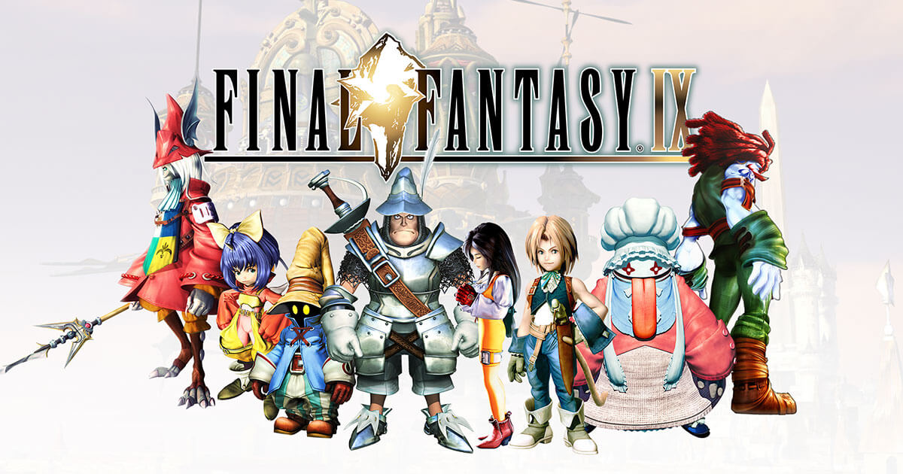
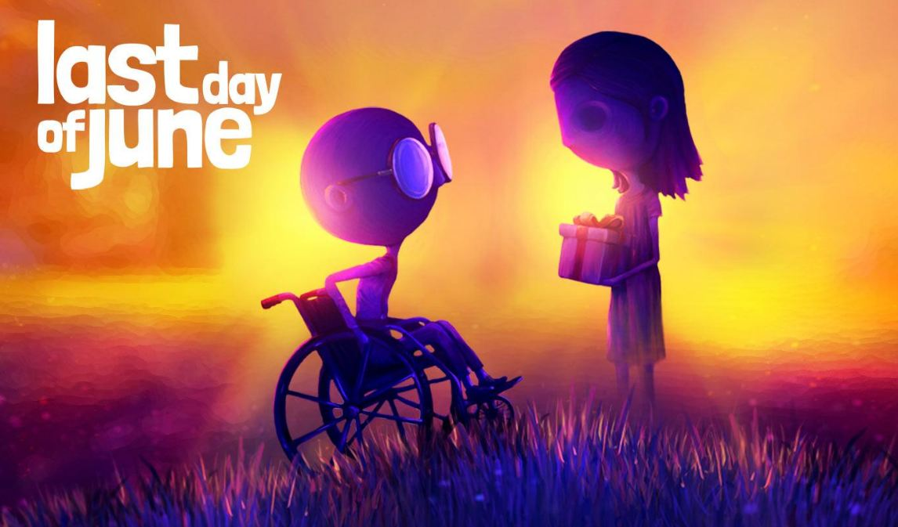

| Nombre del Juego |
Ilustración |
Recomendación |
Reseña |
| The Legend of Zelda: Breath of the Wild |
 |
 |
Una aventura épica que te sumerge en un mundo vasto y lleno de misterios, a la vez de ser una reimaginacion de la
formula de los viejos zelda. |
| Final Fantasy IX |
 |
|
Un juego RPG que juega con la formula de los primeros Final Fantasy para reconstruir sobre la misma y crear su propio
camino, de lo mejor que tiene la ps1. |
| Last Day of June |
 |
|
Un juego con problemas a la hora estructurar el avance del mismo pero con un interesante hilado de sus rompecabezas, si no fuer tan lineal
y jugara mas con el medio del videojuego la pondria recomendar sin dudar, no es malo pero como esta pudo ser una pelicula y no mucho cambiaria
si lo que buscas son solo rompecabezas y una historia bonita no es mala opcion el juego. |